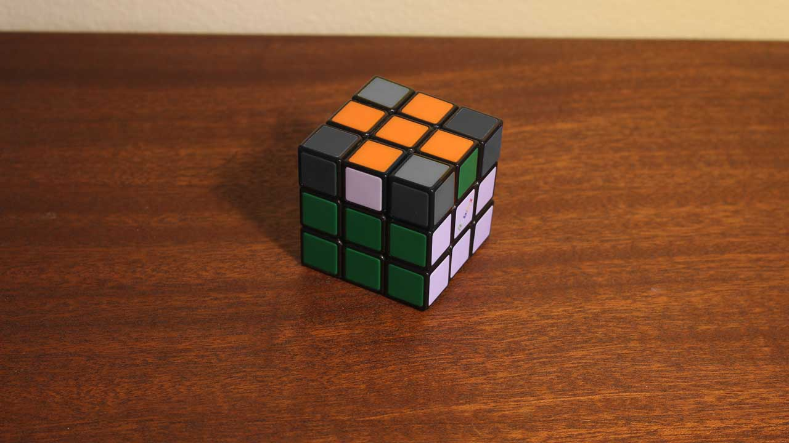
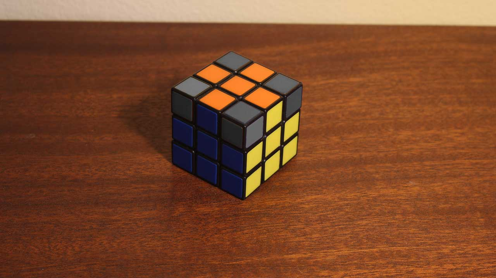
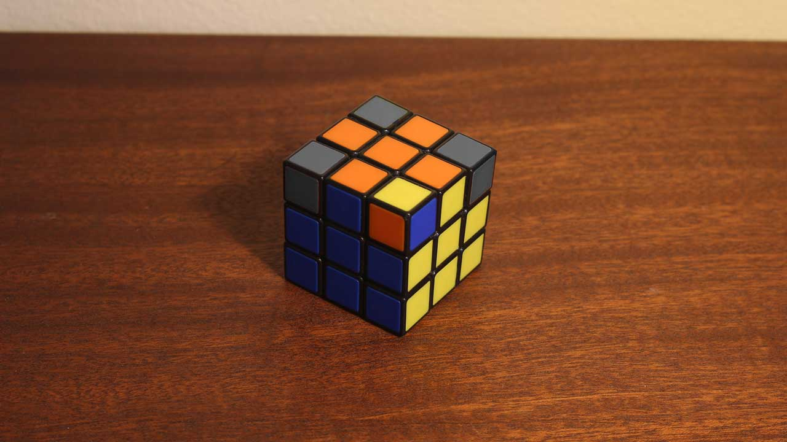
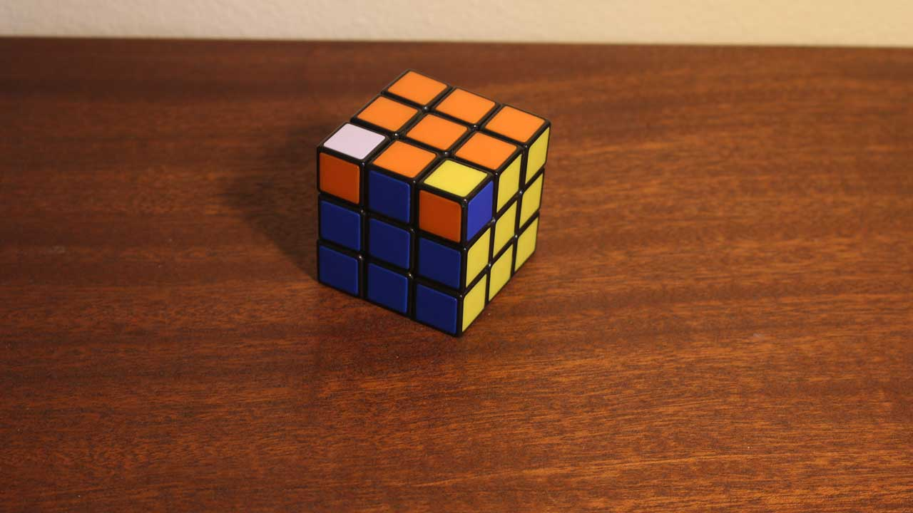
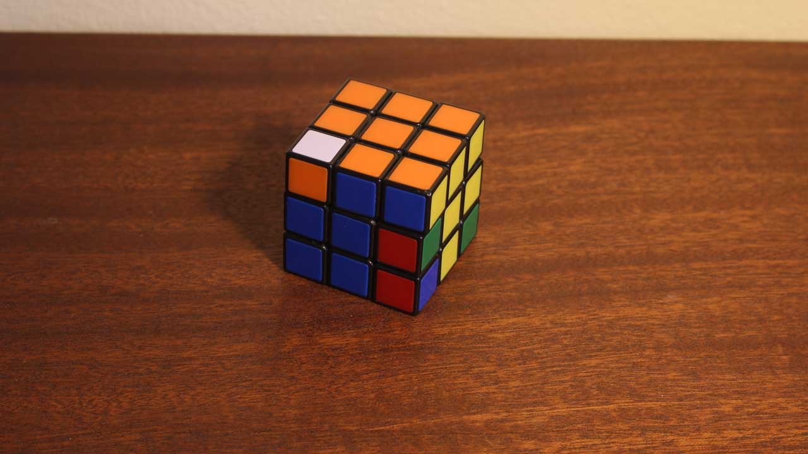
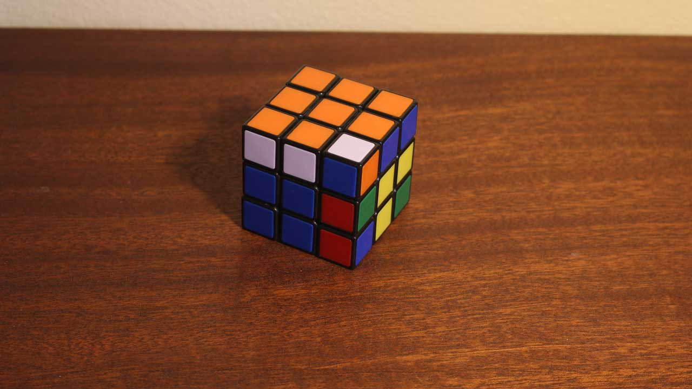
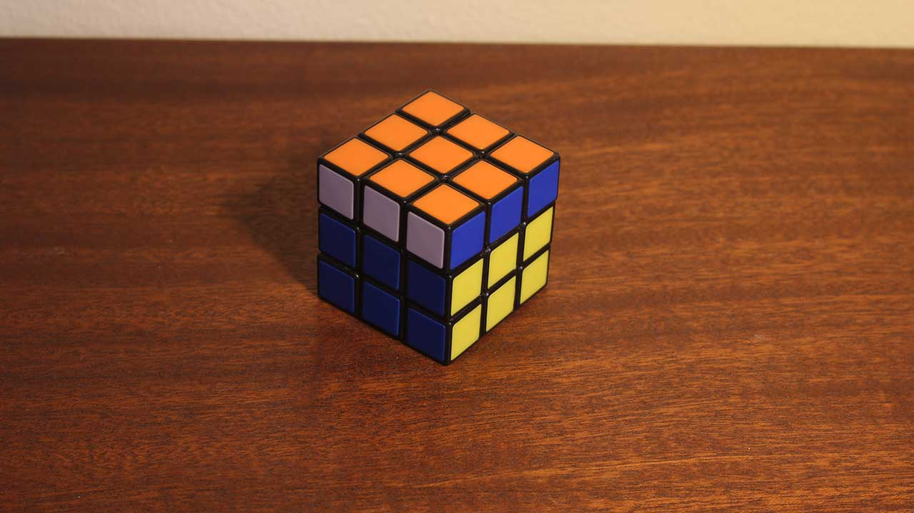
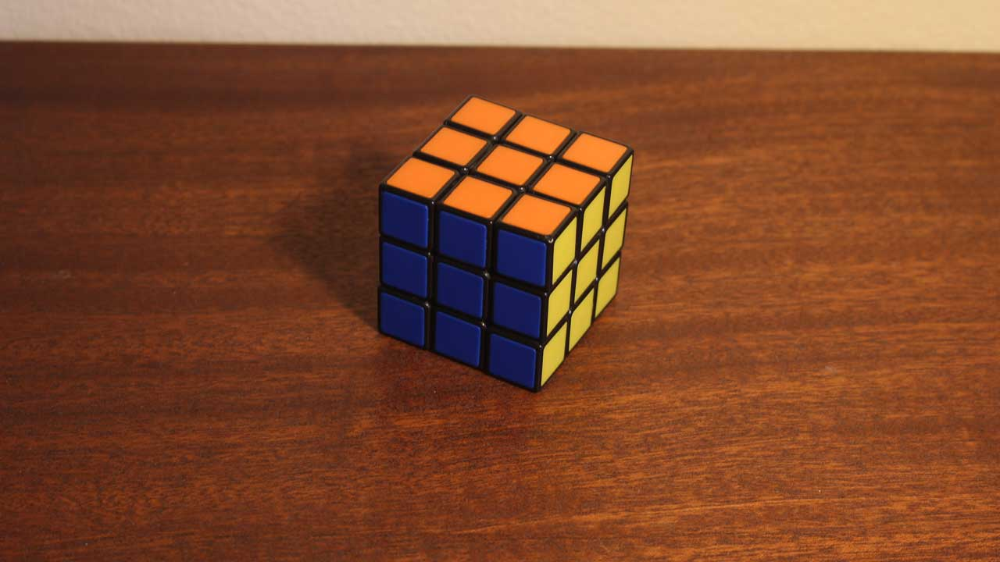
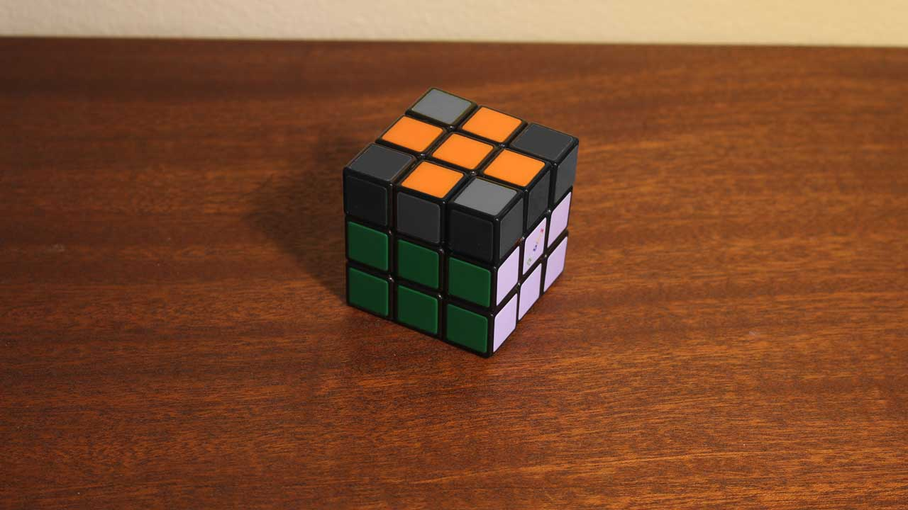
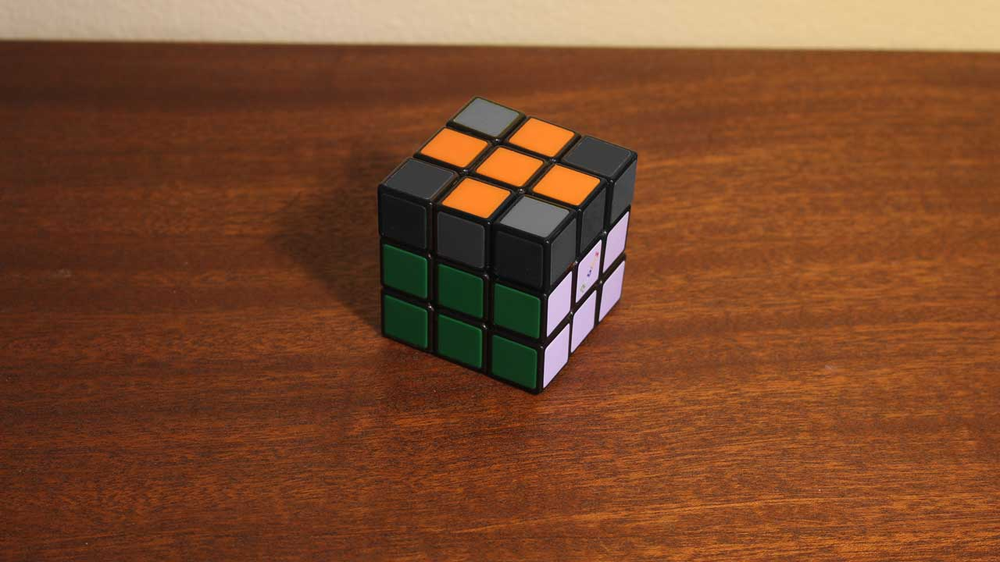

How To Solve A Rubik's Cube
This is a guide on how to solve the 3x3x3 standard Rubik's cube. You must have some variation of a 3x3x3 Rubik's cube to follow this guide. It is also recomended that you have paper and pencil to write down the algorithms to spend time practicing.


Step 1: Notation
There are 6 sides that make up the cube. Each of these sides are named in two ways: how you hold the cube, and the color of side.
While holding the cube (no matter the color), the face that is facing you is considered the "Front" The face that is facing away from your body is the "Back",
with the Left, Right, Up, and Down respectivly. These faces are summarized by the letters F,B,L,R,U,D these letters are used to write algorithms. These algorithms
are used to define how to move the puzzle. A normal letter (R) means to turn that side clockwise (as if you were looking at that face directly). A letter with
an apostrophy (R') is "inverted", meaning to turn that side counter-clockwise (as if you were looking at that face directly). Through these notations, we can string
together many moves to create algorithms.
Example: R' D' R D
The other way to define a side is by defining it's color. Within a standard 3x3x3 cube, the middle piece will never move. Therefore the middle color defines that side's color.
Step 2: Solve the Cross


The first step to actually solve it, is to chose a side. Orient the cube so that this face is the "UP" side. For this example, it will be red. I recomend that you chose a side, and always solve for it while you learn.
Once you have chosen a color, you must solve for the side pieces and connect them to the adjacent sides. This should form a "cross" or an "X". It is VERY important that
the side pieces connect with the other center colors as well.
Unfortunately, there are no algorithms for this step. You must solve for the cross using logic and reasoning alone. However, here are a few tips:
1) Align an edge piece with an adjacent color, then rotate that side to align the colors up to the cross.
2) If an edge piece is already on the face you are attempting to solve for, rotate it down to the bottom layer, then reintroduce it properly oriented.
3) Once you have a cross formed, double-check all sides for allignment with the adjacent centers.

Step 2: Solving Corners


Once you have the cross solved, it is then time to solve the corners of that face. Thus solving the first side, and the first layer as well.
Once again, it is important to solve for all three colors when placing corners, not just the one face. To do this, you identify the corner piece, and where
it goes to solve. If it is on the bottom layer, place it under its locations. Then perform the following algorithm.
If it is already in place, but not oriented correctly, or if there is a piece in the wrong place, use this same algorithm to empty that space. Or repeat
this algorithm to rotate the same piece until oriented correctly. Every time you do this algorithm twice, the top piece will be rotated once.

R' D' R D

Step 3: Solving Second Layer
Step 3.1: Turn the cube over. The solved side should now be the Down face. You will remain like this for the rest of the solve.
There are two algorithms for this step. These algorithms take the top edge piece of the Front face and rotate it either to the right side, or the left side of the Front face.
These will be used to fill in the edges of the second layer. Just as with previous steps: you must line up with the adjacent centers.
If there is an edge that is in position but rotated wrong, just like the last step, just use this algorithm to fill in a random piece. Then repeat this step to fit it in correctly.


Left: U' L' U L U F U' F'
Right: U R U' R' U' F' U F

F R U R' U' F'
Step 5: Orient Top Cross
This step is to allign the edges of the cross to the adjacent centers.
You should be able to allign two edges already. Either opposite, or adjacent.
If it is opposite, adjust to the front, and back sides. If it is adjacent, adjust to the right, and the back faces.


R U R' U R 2U R' U
Step 6: Assigning Corners
Look around at the top corners. One of them should be in the correct place, even if it is not oriented correctly. Position this on the Front-Right side. If not, just perform algorithm from anywhere.
This will put the corners in the correct locations.


U R U' L' U R' U' L
Step 7: SOLVE!
With the corners that are not oriented correctly, simply perform this algorithm (which is also the first one) enough times to solve that corner.
THEN: rotate JUST THE TOP layer to position a new unoriented corner. Then continue with the algorithm. Once all corners are oriented, the cube should be one move away from being solved.


R' D' R D

Move that last layer into position, and finish your first Rubik's Cube!
Congradulations!
When you're ready, mix it up, and do it again! Keep practicing, and eventually the algorithms will become muscle memory.

Back To Top

 
